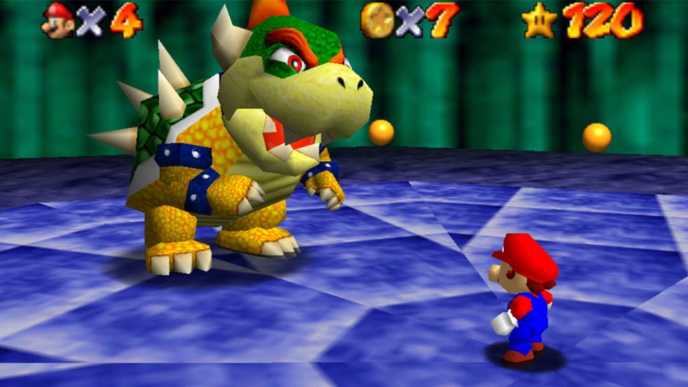
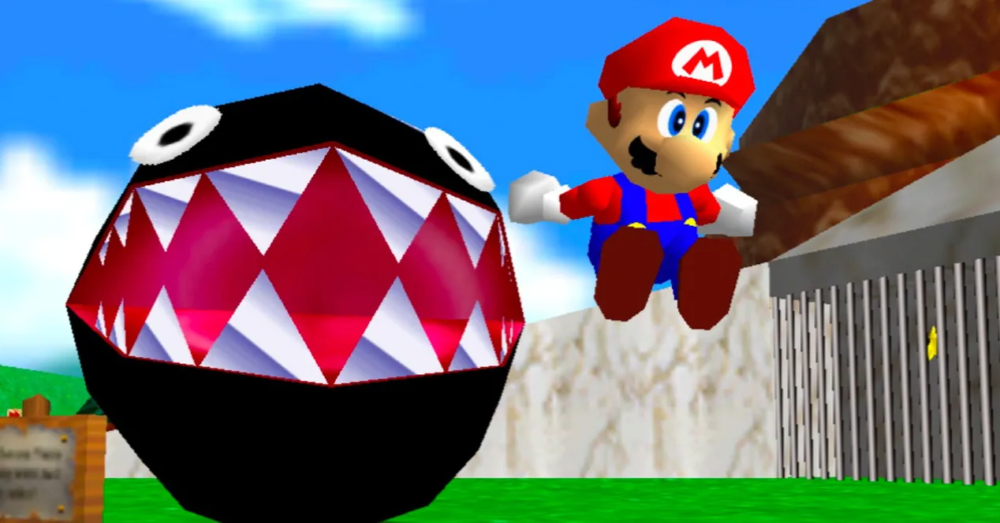

Game Zone
Welcome to Game Zone

Super Mario 64
 |
 |
|  |  |
Super Mario 64 se desarrolla dentro del Castillo de la Princesa Peach, el cual contiene 4 pisos, un sótano, una piscina y un patio trasero. El área exterior del castillo es un área introductoria en la que el jugador puede experimentar. Dispersas a través del castillo existen entradas a los niveles de juego y otras áreas, a las que usualmente se llega al saltar dentro de un cuadro.
Cada nivel es un mundo encerrado en el que el jugador es libre de moverse en todas direcciones y explorar el lugar sin límite de tiempo. Los mundos están llenos de enemigos que atacan a Mario, como también de amistosas criaturas que otorgan ayuda, ofrecen información o piden algún favor. Mario reúne estrellas en cada nivel; algunas estrellas sólo aparecen después de que Mario haya completado ciertas tareas, cuya ubicación usualmente se puede deducir gracias al nombre de la estrella a completar. Estos desafíos incluyen derrotar jefes, resolver acertijos, ganar una carrera a algún oponente o recolectar monedas. A medida que Mario reúne estrellas, se van abriendo más áreas del castillo.Las puertas del castillo que están cerradas pueden ser abiertas usando llaves que se obtienen tras derrotar a Bowser en el nivel final de cada piso.
Mario es ayudado en algunos niveles por tres gorras que le otorgan poderes especiales. La Wing Cap (Gorra alada) permite a Mario volar, la Metal Cap (Gorra metálica) lo vuelve inmune a casi todo el daño y le permite caminar bajo el agua, y la Vanish Cap (Gorra invisible) lo vuelve parcialmente inmaterial, permitiéndole caminar a través de ciertas paredes (además de otorgarle invulnerabilidad frente a ciertos tipos de daño). Algunos niveles contienen cañones, los cuales son activados después de hablar con un Bob-omb Buddy color rojo. Justo en el momento en que Mario ingresa a un cañón, se usa la palanca de control del mando para mover el cañón y disparar a Mario a distancias más lejanas. Cuando Mario está usando la Wing Cap, los cañones se pueden utilizar para llegar a grandes altitudes o volar a través de un nivel rápidamente.
Hay muchos secretos escondidos en el juego, de los cuales la gran mayoría contienen estrellas adicionales que son necesarias para completar el juego en un 100%.
Noticias

We add new free website templates frequently.
You can remove any link to our websites from this template you're free to use the template without linking back to us.

This is just a place holder so you can see how the site would look like.
The template is designed by free website templates for you for free you can replace all the text by your own text.
Play Now


Template Beauty
If you're looking for beautiful and professionally made templates you can find them at Template Beauty.